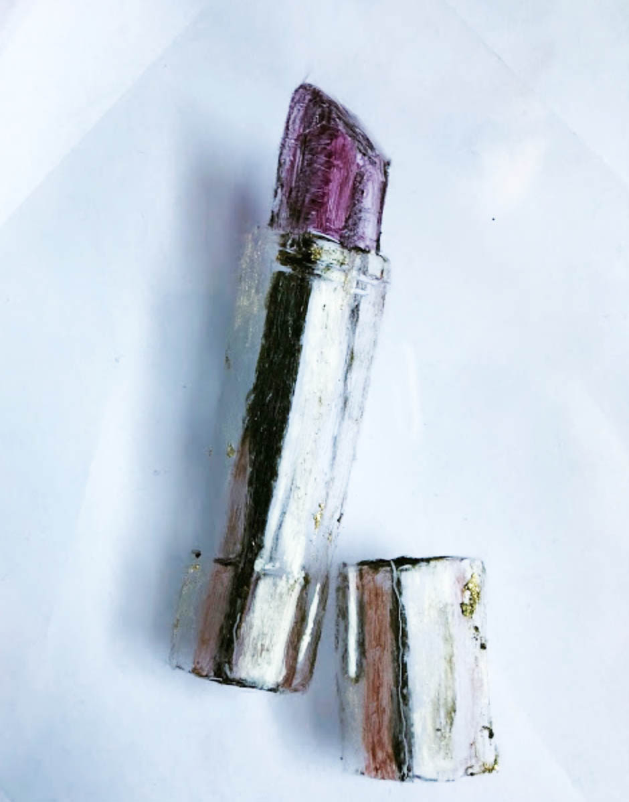

Plastic Vanity, BFA Thesis (In Progress)
A drawing series advocating for the freedom to paint your face.. Drawings of makeup products with makeup as the medium on acetate. Those who beat their faces on the daily may use these products to build confidence and express their creativity and are no strangers to the words conceded, selfish, fake, and plastic. The truth is, those who choose to wear makeup do for no one other than themselves. Attempting to impress other people isn't interesting. Most people don’t wear makeup to look “natural,” there’s nothing wrong with wanting to look a little plastic and feel a little vain. The word plastic may be responded to with a thank you. This project embraces the creativity and power makeup provides to look and feel any way, every day. This is unapologetically all about you. This drawing series, drawn entirely with makeup products, displays the tools that represent creativity and confidence; The power tools. What can’t makeup do? The limit does not exist. These are the products that cause worship and wars over the internet and give the power to face anything the day brings with the most snatched face forward.
